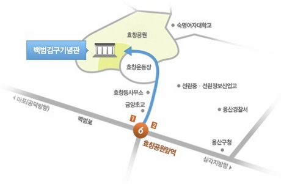

'사람'을 세우다
AI · 데이터 기반 실천으로
사회복지의 가능성을 확장합니다.
기술은 사람을 대신하지 않고 돕습니다.
인권 · 존엄 · 공공성의 가치 아래
기술의 한계를 인식하고
책임 있는 사용 기준을 세웁니다.
판단 · 관계 · 책임의 역량으로
현장에서 최선의 결정을 내리는
사회복지 전문직의 핵심입니다.
지난 40년간 축적해 온 전문화의 과정을 성찰하고, 변화하는 사회 환경 속에서 다가올 10년을 이끌 전문직 역량의 방향을 제시합니다.
1부 · 특강기술은 확장되지만 중심은 사람입니다. 디지털 전환의 흐름 속에서 사람 중심을 어떻게 재구성할 것인지 그 전략을 모색합니다.
1부 · 특강AI 시대의 도전 속에서 사회복지 윤리와 철학의 기준을 재정립하고, 기술 환경 속에서 전문직이 감당해야 할 책임과 역할을 모색합니다.
1부 · 특강전환의 시대, 사람을 세우는 사회복지 4.0시대에 우리 협회의 방향성을 제시합니다.
1부 · 정리청년인재상, 차세대리더상, 미래공헌상, 감사패 등에 대한 포상이 진행됩니다.
2부 · 포상39세 이하, 경력 3년 이상의 사회복지사로서 현장에서
새로운 가능성을 보여주고 있는 미래 인재를 선정합니다.
40대 사회복지사로서 현장의 중심에서 리더십을 발휘하며
서울복지의 미래를 이끌어갈 차세대 리더를 선정합니다.
50대 이상 사회복지사로서 오랜 세월 현장에서 헌신하며
서울 사회복지의 기반을 다져 온 분들을 선정합니다.
사회복지공동모금회, 월드비전 등 유관단체에 대한 감사패와
협회 강사 중 우수 강사를 선정하여 시상합니다.
2026년 4월 22일 (수)
15:00 – 17:00
백범김구기념관
서울사회복지사 400명
